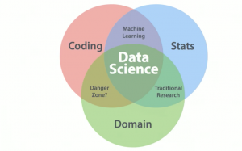

New
insideBIGDATA
InsideBIGDATA focuses on the machine learning side of data science. It covers big data in IT and business, machine learning, deep learning, and artificial intelligence. Guest features offer insight into industry perspectives, while news and Editor’s Choice articles highlight important goings-on in the field. All the articles are neatly categorized by topic to zero in on any subject in particular. The blog also maintains a host of resources for events, jobs, and research reports, and more. This is a resource for anyone wanting to stay up to date with machine learning.
Travel . Events
June 24, 2020
36 comments
by Jeff Leek, Roger Peng, and Rafa Irizarry
New
Simply Statistics
If you can’t get enough of statistics, here’s the blog for you. Run by three biostats professors, they blog about an abundance of statistics in big data and how they are used by data scientists across all kinds of fields—including their own. For any new statisticians looking to jump into the career, they also have interviews with data scientists about their careers and roles in the industry.
Creative . Design . Business
June 16, 2020
48 comments
by Jeff Leek, Roger Peng, and Rafa Irizarry

Datafloq
Datafloq is run by Mark Van Rijmenam, author of “Think Bigger: Developing a Successful Big Data Strategy for Your Business,” and is a great resource for big data in data science. The blog focuses on the business aspects of big data and how to make data science work for organizations. It also features information about trending tech topics like blockchain and artificial intelligence. While it largely acts as a resource with articles and insights, Datafloq also seeks to connect professionals via job postings, vendors, events, and training.
Music . Audio
June 11, 2020
24 comments
by Mark Van Rijmenam
Data Science 101
For anyone looking to enter the field of data science, here is great—if dense—start. Ryan Swanstrom has worked in data science for Microsoft, Wells Fargo, and government defense contractors. He currently consults as the Director of Data Science for Unify Consulting. In this blog, he shares his valuable experience, tips, and advice on how to be a successful data scientist. The blog extends back to 2012 with extensive archives, which are worth diving into for a hands-on history of the last few years in data science discussion.
Artworks . Design
June 4, 2020
72 comments
by Ryan Swanstrom